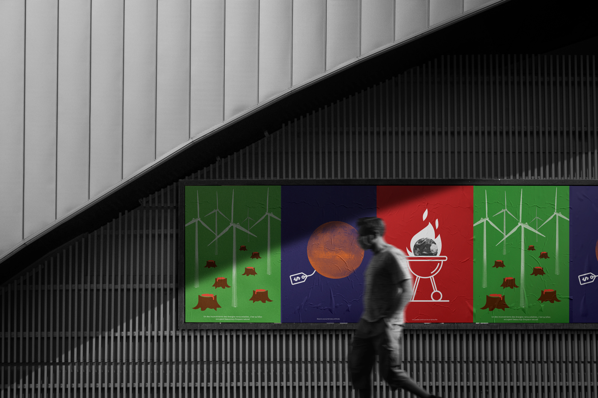
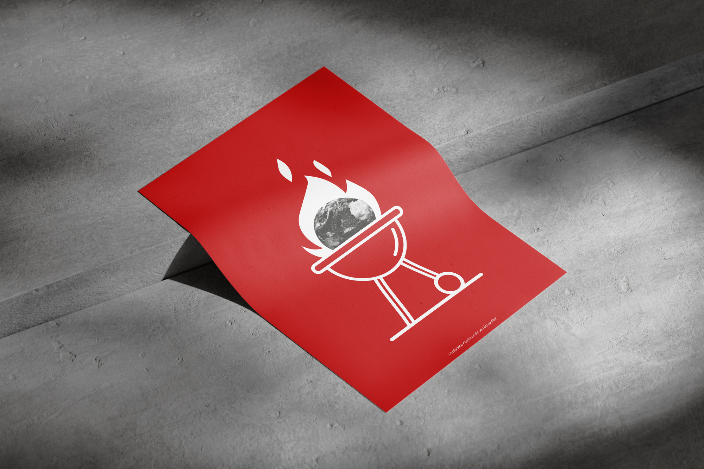
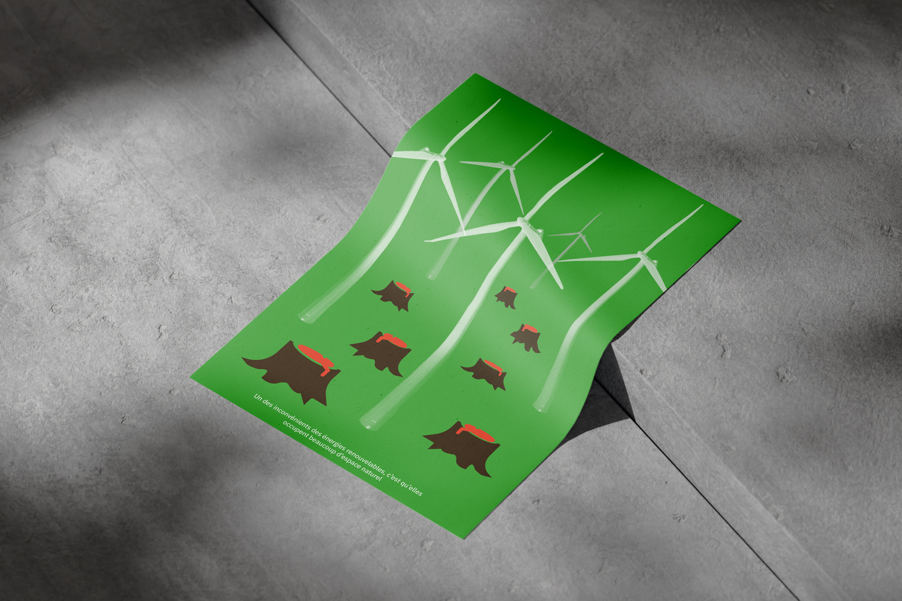
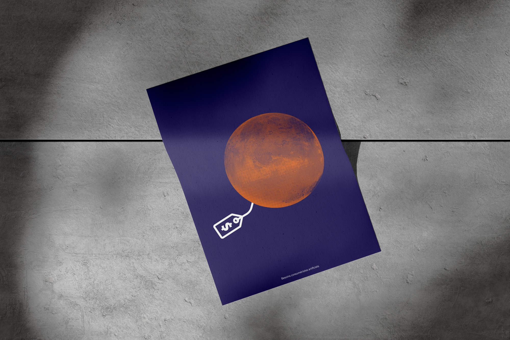

Ce projet vise à sélectionner des phrases issues des podcasts de la Recyclerie et à les traduire visuellement en trois affiches. Chaque affiche combine un style pictogramme avec une photographie tramée.
Phrase 1 - « La planète continue de se réchauffer » : La représentation de la Terre en train de brûler dans un barbecue symbolise l’urgence du réchauffement climatique, avec l’humour contrastant, pour sensibiliser. Le pictogramme blanc sur fond rouge, rappelant les panneaux signalétiques alerte sur l’état critique de la planète.
Phrase 2 - « Un des inconvénients des énergies renouvelables, c’est qu’elles occupent par la destruction de beaucoup d’espace naturel.» : L’affiche dénonce l’impact des éoliennes sur la biodiversité, montrant des éoliennes remplaçant des arbres abattus. Le vert et le rouge illustrent la nature et la destruction, renforçant visuellement l’effet de malaise.
Phrase 3 - « Besoins consuméristes artificiels. » : L’affiche critique le consumérisme en représentant l’absurdité des besoins humains, en une planète étiquetée comme un produit. Les couleurs, bleu et orange, évoquant l’espace et la planète Mars, mettent en valeur l’absurdité de la commercialisation.



